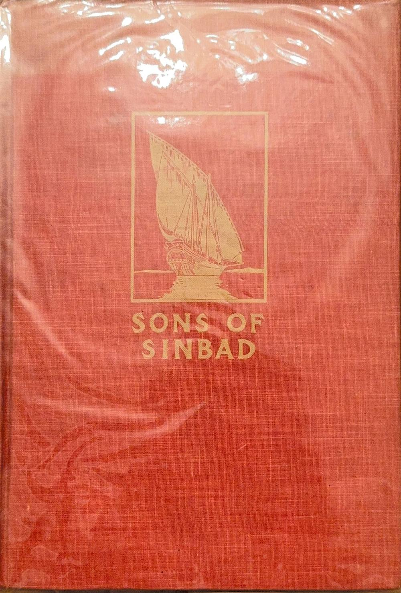

رحلة ١٩٣٨ و١٩٣٩، نُشر أول مرة ١٩٤٠ · الطبعة الأولى ١٩٤٠، وصفحات والفهرس من طبعة دار أرابيان ببليشنغ ٢٠٠٦
آلن فاليرز، أبناء السندباد: صفحات القطامي
ما هي
أبحر القبطان الأسترالي آلن فاليرز من عدن إلى زنجبار ثم عاد إلى الكويت في ١٩٣٨ و١٩٣٩ على بوم علي النجدي، وهو يكتب اسم القطامي «كيتامي». وتتبع هذه الصفحات خمسة من رجال العائلة: عبدالله القطامي وبومه الصغير الذي رافقهم طوال الرحلة، وبدر بن عبدالوهاب وبغلة البدري القديمة التي فكر فاليرز في شرائها لإنقاذها، و«عبدالوهاب القطامي الشهير» وبومه الكبير الداو، ويوسف بن عيسى وبومه سمحان، ومحمد القطامي الذي قُتل في أحداث ١٩٣٩ في الكويت. وفي إحدى الصفحات ذكر «دليل عيسى القطامي العربي للبحار الشرقية» أي دليل المحتار، وفي أخرى بيت القطامي على البحر في الكويت. وتبين صفحات الفهرس مواضع ذكر كل منهم.
أهميتها
شهادة عيان عن نواخذة العائلة في البحر، كُتبت في الموسم نفسه.
صور الصفحات


ملاحظات
يجعل فاليرز عبدالوهاب بن عبدالعزيز عما لعبدالله القطامي، والعائلة ود. الحجي يذكرانهما أخوين لأب. وعبدالله الذي يسميه أخا النجدي ليس من عائلتنا. و«عبدالوهاب خليفة» المذكور في عدة صفحات هو عبدالوهاب خليفة الغانم، ابن خليفة بن شاهين الغانم، وقد رُبطت هذه المواضع به. نعرض هنا الصفحات الأولى فقط، ويرى أفراد العائلة بعد تسجيل الدخول كل الصفحات وعددها 96.
أسماء أخرى
المصادر
آلن فاليرز، أبناء السندباد، تشارلز سكريبنرز، نيويورك، ١٩٤٠؛ وطبعة دار أرابيان ببليشنغ، لندن، ٢٠٠٦، بأرقام الصفحات المبينة.
كيف كُتب هذا النص: نسخ صفحات من كتاب منشور.
افتح في الموقع التفاعلي